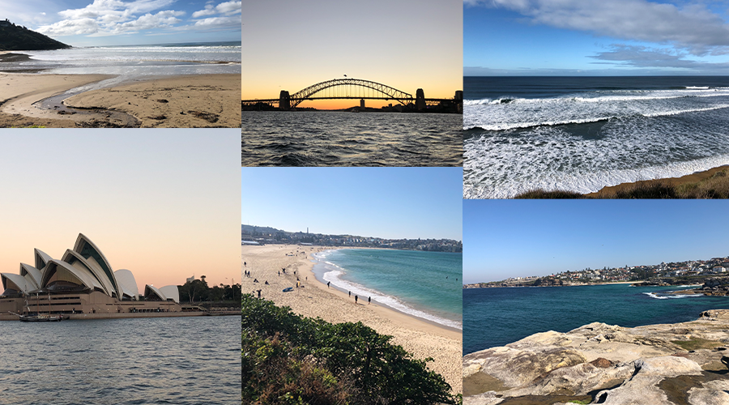
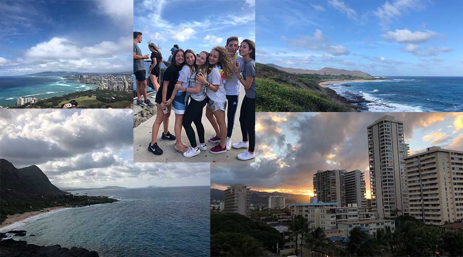
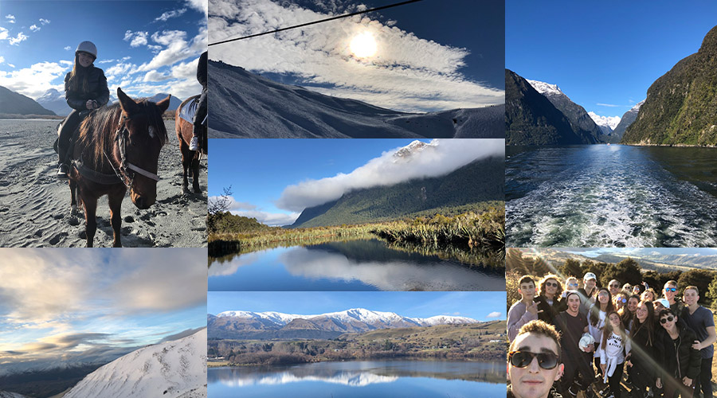
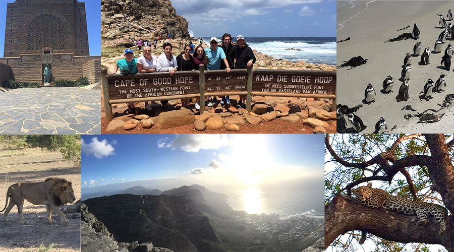

I traveleled to Australia during the Summer of 2018 on a program called Kanfei. I was there for two weeks total and absolulety loved it! We went to Melbourne and Sydney.
Hawaii

I have been to South Africa several times because my father is originally from there. Here are some of my favorite photos that I have taken on the Safari, in Cape Town, Pretoria, and Johannesburg.
New Zealand

I traveleled to New Zealand during the Summer of 2018 on a program called Kanfei. I was there for over two weeks and have never seen a place so beautiful in my life. The views and landscape were absolutely breathtaking.
South Africa

I also traveled to Hawaii on Kanfei and was there for about 4 days. I loved the beaches, the views, and all of the experiences